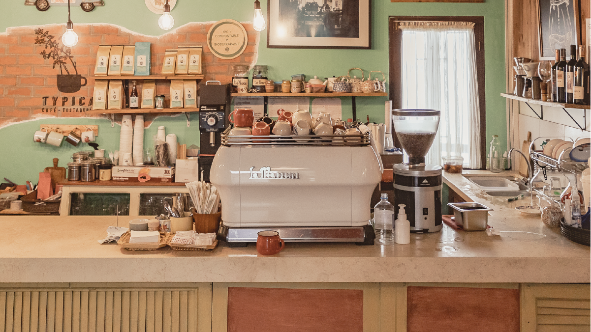
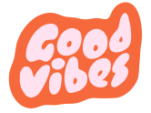
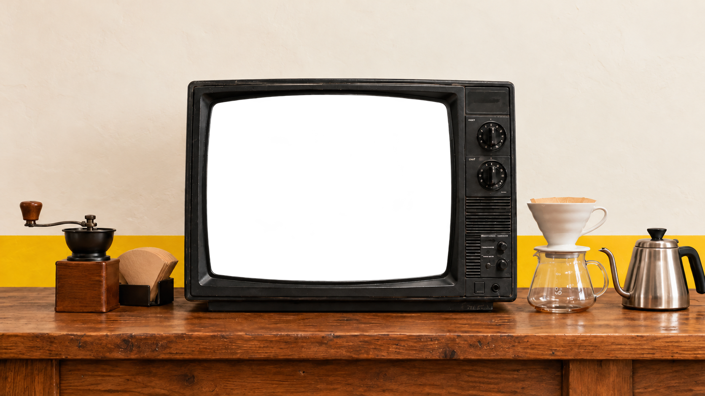

Jazmín, lavanda, piña y mandarina
Gesha
Caranavi · La Herminia
Bs 145250 g · En grano
Precio de muestra

Nos gusta el café de acá. Y todo lo que pasa alrededor: una conversación, un disco, una casa que se vuelve tu lugar.
Siempre en buena compañía



Del origen al tueste, de la barra a tu mesa. Cada café tiene su historia. Y cada visita, la suya.
 EN
ENJazmín, lavanda, piña y mandarina
Caranavi · La Herminia
Bs 145250 g · En grano
Precio de muestra
Flores blancas, cítricos y fruta
Coroico · Nora Gemio
Bs 95250 g · En grano
Precio de muestra
Un perfil equilibrado para todos los días
Bolivia · Selección Typica
Bs 75250 g · En grano
Precio de muestra
Guayaba, papaya, durazno y miel
Mairana · Finca Arlet
Bs 110250 g · En grano
Precio de muestra
Manos que seleccionan, tuestan y preparan. Gente que vuelve. Música, charlas y planes que se arman alrededor de una taza.
Mira lo que pasa en Typica